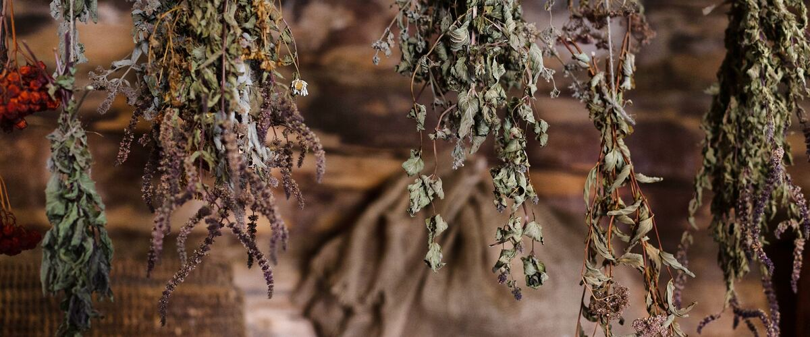

Plant guides · Oregon · Washington · Idaho
Harvesting, Drying and Freezing Kitchen Herbs
Cutting basil, parsley and thyme so they keep regrowing, and whether drying or freezing works better for each one.
There's no easier way to make your cooking taste better than walking outside with a pair of scissors. A few pots of herbs by the back door save you buying sad little plastic packs at the store, and in a good summer you'll have far more than you can use fresh.
Most kitchen herbs grow better the more you cut them, as long as you cut them the right way. A basil plant picked properly all summer turns bushy and keeps going; one that's left alone grows tall, flowers and quits. This guide covers how to harvest each common herb so it keeps producing, and how to save the extra before frost. For when to plant each one in your town, see the herbs planting guide.
When to pick
- Morning is best. Pick after the dew has dried but before the afternoon sun. Leaves are full of water and flavor then.
- Before flowering, for leafy herbs. Basil, cilantro, parsley and mint taste best before they bloom. Once flowers form, many get bitter or stop making new leaves.
- Take no more than a third. Cutting more than about a third of a plant at once slows it down, especially perennials.
How to cut each herb
- Basil: pinch or cut each stem just above a pair of leaves. Two new shoots grow from that spot, so the plant branches. Pinch off flower buds as soon as they appear.
- Parsley and cilantro: cut the outer stems at the base and leave the center to keep growing.
- Chives: cut a clump down to an inch or two above the ground. It regrows within a few weeks.
- Mint and oregano: cut stems back by a third to a half. A hard trim in midsummer brings a fresh flush of tender leaves.
- Thyme, rosemary and sage: snip soft green tips. Avoid cutting into old, bare wood, which often doesn't resprout.
- Dill: snip leaves as needed. If you want seeds, leave a few plants to flower and cut the heads once the seeds turn brown.
Before the first frost
Basil is the first to go: it blackens after even a light frost, and often looks unhappy as soon as fall nights turn cool. Pick the whole crop before your first frost date, which your town calendar shows. Parsley, chives, sage, thyme and oregano handle cold much better, and west of the Cascades many keep going into winter. Rosemary is hardy in milder west-side gardens but often dies in colder east-side and high desert winters, so many gardeners there keep it in a pot and bring it into a cool, bright spot.
Stop cutting perennial herbs hard about a month before your first frost, so the plants aren't pushing soft new growth into the cold.
Drying
Drying works best for herbs with tougher leaves and strong oils: oregano, thyme, rosemary, sage, mint and dill. Tie small bunches with string and hang them upside down somewhere warm, dark and airy. In a damp Northwest fall, a spare room or a spot near (not on) a heat source works better than a garage or porch, where they can mold. They're ready when the leaves crumble, usually in one to two weeks. Strip the leaves, keep them whole if you can, and store them in a sealed jar away from light.
A dehydrator on its lowest setting, or an oven at its lowest temperature with the door cracked, is faster. Keep the heat low; high heat drives off flavor.
Freezing
Soft, leafy herbs lose most of their flavor when dried. Freeze them instead:
- Basil: blend with olive oil, or make pesto, and freeze in ice cube trays. Plain basil leaves turn black in the freezer, so the oil helps.
- Parsley, cilantro, chives and dill: chop, pack into ice cube trays, cover with water or oil and freeze. Pop out the cubes and store them in a freezer bag.
- Any herb: a thin layer of chopped herbs in a flat freezer bag lets you snap off what you need.
Herb salt, butter and vinegar
A few old-fashioned methods are worth trying with the last of the harvest. For herb salt, blend a packed cup of fresh herbs (rosemary, sage, thyme and parsley are a good mix) with about half a cup of coarse salt, spread it on a tray to dry for a few days, then store it in a jar. For herb butter, mix finely chopped herbs into soft butter, roll it into a log in parchment and freeze it; slice off a coin whenever you need it. Herb vinegar, made by steeping clean sprigs of tarragon, thyme or rosemary in white wine vinegar in the fridge for a couple of weeks, keeps the flavor for salad dressings all winter. Always use fresh, clean, dry herbs, and keep homemade herb oils in the fridge and use them within a few days, since garlic and herbs in oil at room temperature can grow harmful bacteria.
Keeping fresh herbs
Treat cut basil, parsley and cilantro like flowers: trim the stems and stand them in a glass of water. Basil stays happier on the counter than in the fridge. Parsley and cilantro last longer in the fridge with a loose bag over the top. Woody herbs keep well wrapped in a slightly damp paper towel in the fridge.
Herbs are also one of the easiest things to grow in pots by the kitchen door; see growing vegetables in containers for soil and watering tips.